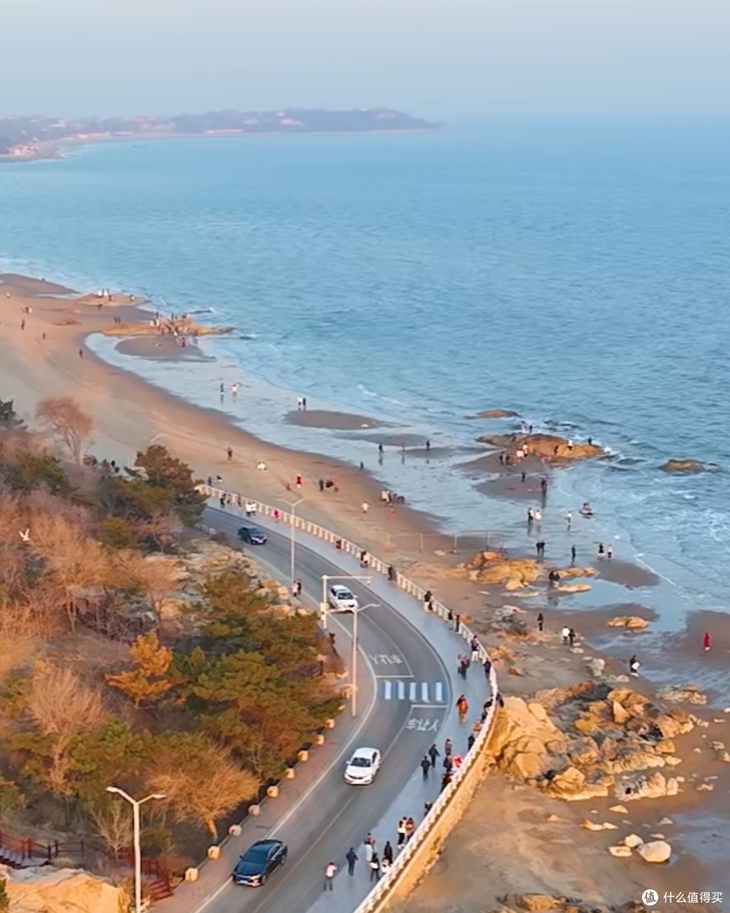
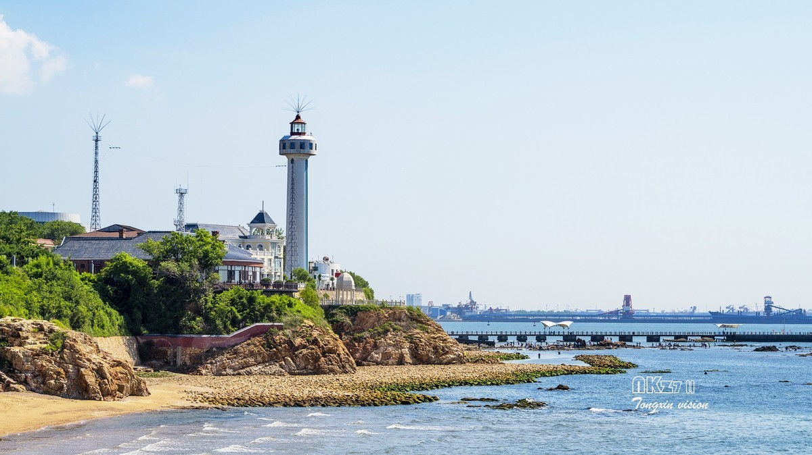
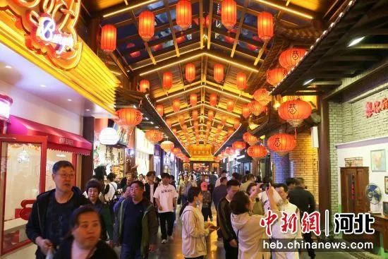
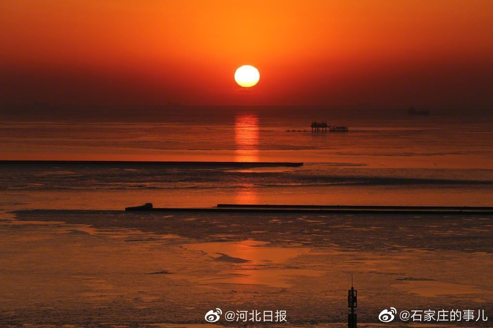
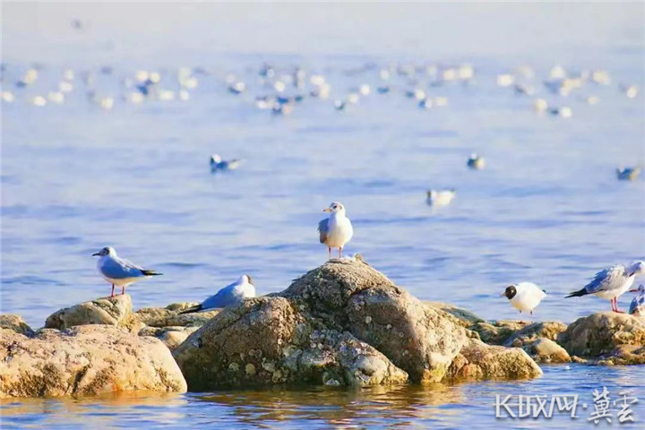
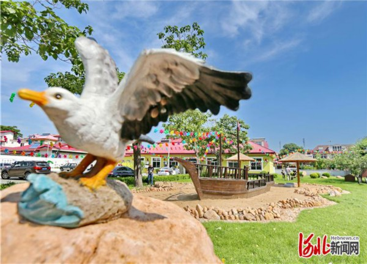
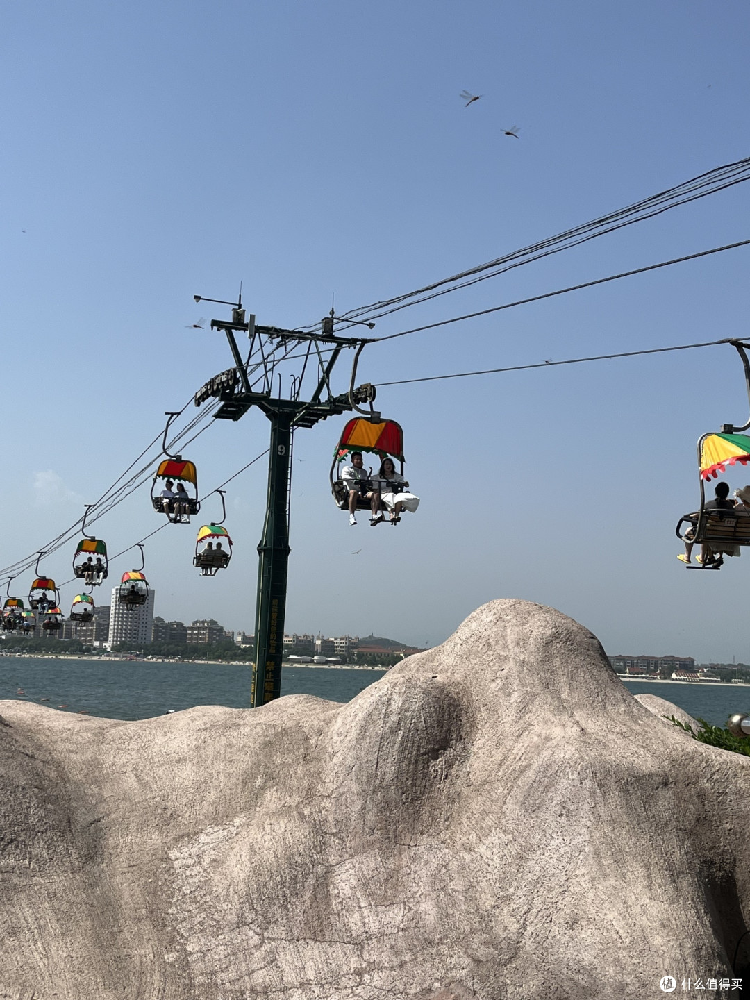

秦皇岛海岸线
秦皇岛是北方最经典的海滨度假城市，周末两天一夜刚好够用。第一天逛港口花园、穿梭市井小巷、傍晚在金梦海湾看日落；第二天早起追日出、踩沙滩、坐索道上海岛。节奏不赶，海风常伴，是一趟轻松舒适的短途旅行。
Day 1：西港花园 → 秦皇小巷 → 金梦海湾
上午：西港花园
西港花园位于秦皇岛市区西港码头旧址，是近年改造的滨海休闲公园。老港口的工业遗存与现代景观融合，红砖仓库变身咖啡馆和文创空间，码头栈道延伸入海，视野开阔。园内有灯塔广场、观海平台和大片草坪，适合散步拍照。人少清静，很适合作为第一天慢节奏的开场。

西港花园——老港口的滨海新生
下午：秦皇小巷
秦皇小巷是秦皇岛的特色街区，汇集了本地小吃、手工艺品和市井烟火气。巷子不长但内容丰富，烤串、海鲜小食、炸糕、酸奶等边走边吃，还有一些文创小店可以淘点纪念品。午饭在这里解决，体验接地气的秦皇岛味道。

秦皇小巷——市井烟火气
傍晚：金梦海湾看日落
金梦海湾是秦皇岛新开发的高端滨海度假区，拥有细软的沙滩和清澈的海水。沿海岸线有连续的木栈道、亲水平台和雕塑景观带，整体环境干净整洁、商业化程度适中。傍晚时分在沙滩上看日落，海风习习，非常惬意。周边有不少海鲜餐厅和酒吧，晚餐就近解决。

金梦海湾——傍晚日落时分
Day 2：鸽子窝 → 老虎石 → 仙螺岛
清晨：鸽子窝公园
鸽子窝公园是北戴河看日出的首选地，也是毛泽东写下《浪淘沙·北戴河》的地方。公园建在海边的悬崖上，鹰角亭是最佳观日出点。日出时分，一轮红日从海平面跃出，金光铺满海面，非常震撼。建议日出前30分钟到达占位，夏季日出约4:30-5:00。即使不看日出，白天来也值得——大浅滩退潮时可以赶海捡贝壳。

鸽子窝公园——北戴河最佳日出观赏地
上午：老虎石海上公园
老虎石海上公园是北戴河最热闹的海滨浴场。几块形似猛虎的巨石散落在海滩上，海浪拍打礁石溅起白花，是拍照戏水的好地方。沙滩细软，海水清澈，适合游泳和日光浴。周边就是北戴河的商业中心，餐饮购物都很方便。

老虎石海上公园
下午：仙螺岛
仙螺岛位于南戴河海面上，通过跨海索道与陆地相连。乘坐索道凌空飞渡大海，脚下碧波荡漾，本身就是一种独特体验。岛上有观海楼、海螺仙子雕塑和环岛栈道，360度环海视野极佳。还可以体验海上蹦极和索道飞降，适合追求刺激的游客。下午来光线柔和，拍照和游玩都合适。

仙螺岛——跨海索道与海上孤岛
美食推荐
- 海鲜：皮皮虾（当地叫虾爬子）、螃蟹、扇贝、生蚝、海虹，北戴河石塘路市场可以买了找店加工
- 特色小吃：烤大虾、海鲜烧烤、长城饸饹、四条包子、回记绿豆糕
- 推荐觅食地：秦皇小巷、北戴河石塘路海鲜市场、南戴河渔港周边大排档
住宿建议
- 北戴河（推荐）：景点集中、配套成熟，海景酒店和民宿选择多，刘庄片区性价比高
- 金梦海湾周边：环境新、配套好，适合第一天玩完直接入住
- 预算参考：旺季（7-8月）价格翻倍，经济型200-400元/晚，海景房500-1000元/晚
交通指南
- 到达：秦皇岛站（高铁，北京出发约2小时、天津约1.5小时）；北戴河站（高铁，离北戴河景区更近）
- 市内：打车方便且便宜；公交覆盖主要景点；仙螺岛在南戴河，建议打车前往
实用 Tips
- 鸽子窝看日出务必查好当天日出时间，夏季约4:30-5:00，提前30分钟到
- 7-8月是绝对旺季，住宿翻倍、海滩人多，建议6月或9月来体验更舒适
- 仙螺岛索道单程约10分钟，恐高的话也可以坐船上岛
- 北戴河石塘路市场买海鲜注意防宰——提前看好市场价、自带弹簧秤、找明码标价的店加工
- 海边防晒是重点，SPF50+防晒霜、遮阳帽、墨镜必备